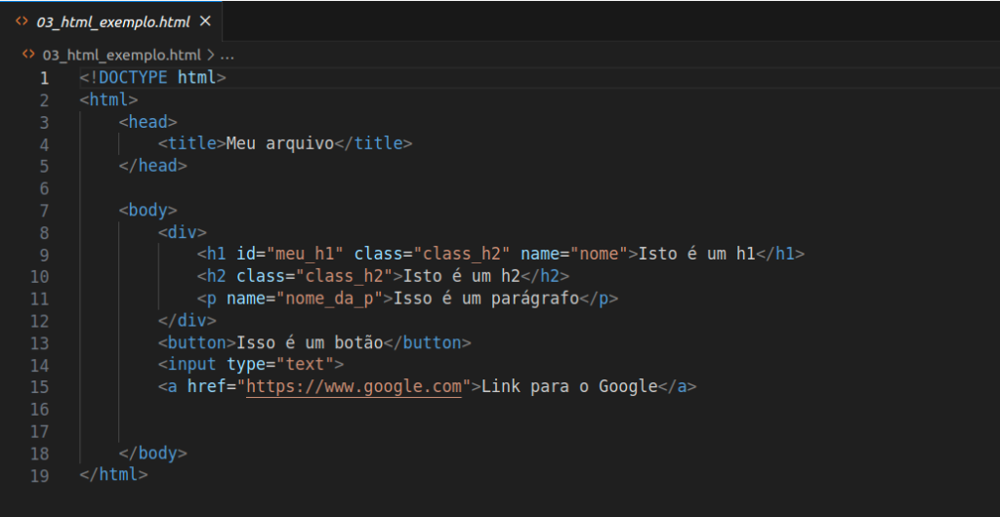
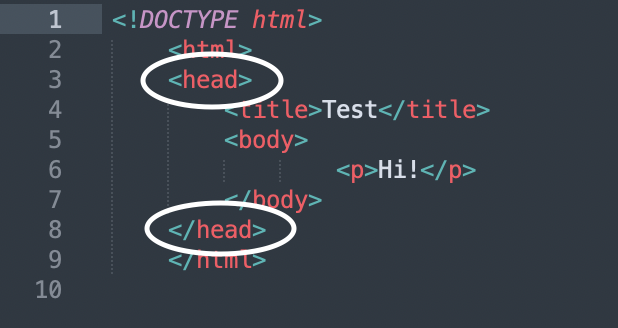
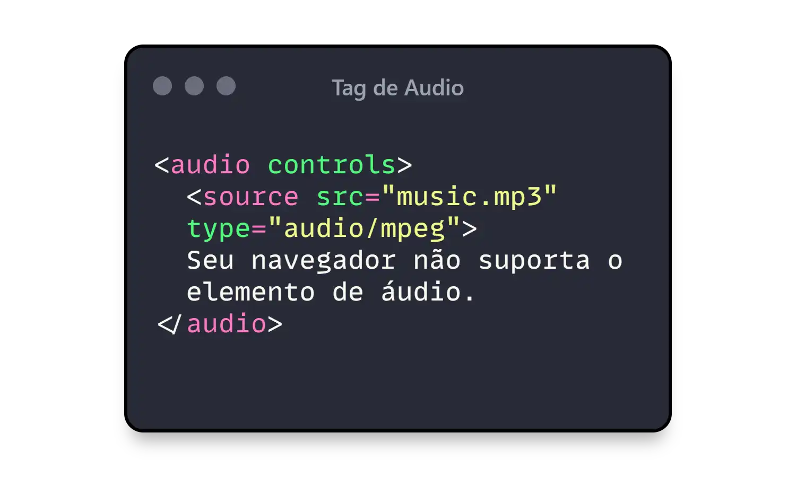
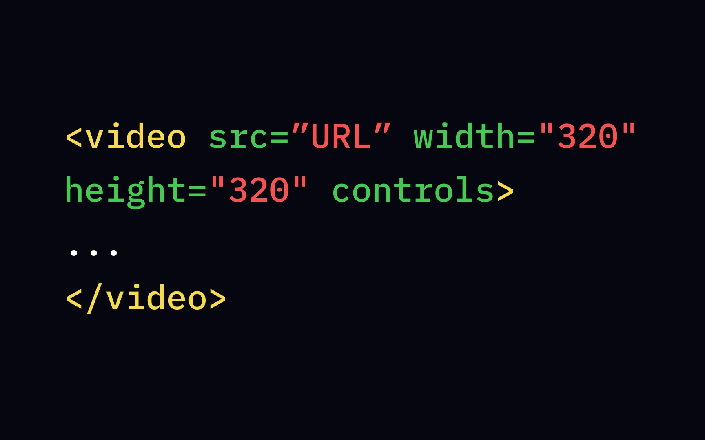
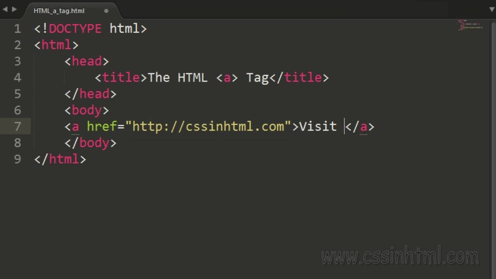
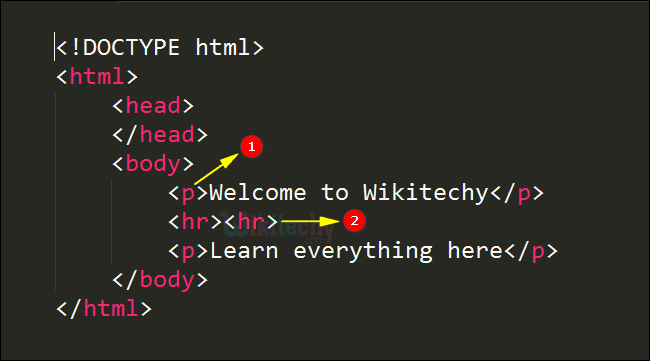
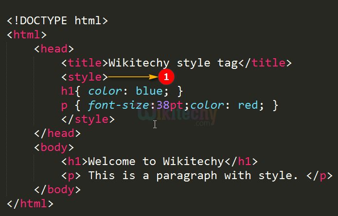

Estrutura do HTML
Tag HTML
O elemento **HTML **(ou HTML root element) representa a raiz de um HTML ou XHTML documento. Todos os outros elementos devem ser descendentes desse elemento.

Veja maisTag Head
O elemento HTML
providencia informações gerais (metadados) sobre o documento, incluindo seu título e links para scripts e folhas de estilos.
Clique aquiTag Body
O elemento
do HTML representa o conteúdo de um documento HTML. É permitido apenas um por documento. Veja aqui
Veja aqui
Tag Main
O elemento
 Saiba mais
Saiba mais
Tag Section
O elemento HTML
 Descubra mais
Descubra mais
Tag Audio
O elemento audio é utilizado para embutir conteúdo de som em um documento HTML ou XHTML. O elemento audio foi adicionado como parte do HTML5.

Saiba maisTag Video
O elemento HTML video incorpora um reprodutor de mídia que suporta a reprodução de vídeo no documento. Você também pode usar video para conteúdo de áudio, mas o elemento audio pode proporcionar uma experiência de usuário mais adequada.

Saiba maisTag a
O elemento a em HTML (ou elemento âncora), com o atributo href cria-se um hiperligação nas páginas web, arquivos, endereços de emails, ligações na mesma página ou endereços na URL. O conteúdo dentro de cada a precisará indicar o destino do link.

Saiba maisTag HR
O elemento HTML representa uma quebra temática entre elementos de nível de parágrafo: por exemplo, uma mudança de cena em uma história ou uma mudança de tópico dentro de uma seção.

Saiba maisTag style
O elemento HTML style contém informações de estilo para um documento ou uma parte do documento. As informações de estilo específico estão contidas dentro deste elemento, geralmente no CSS.

Saiba mais